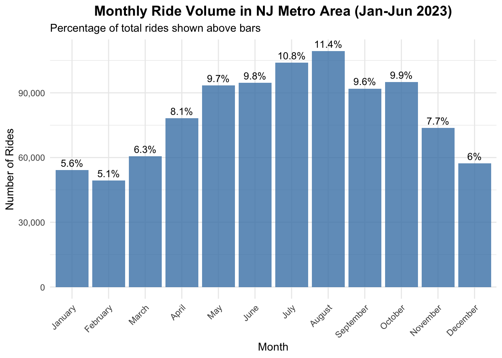
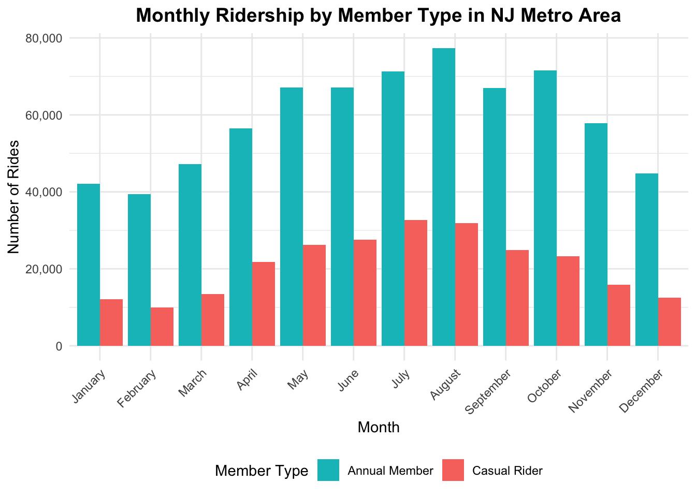
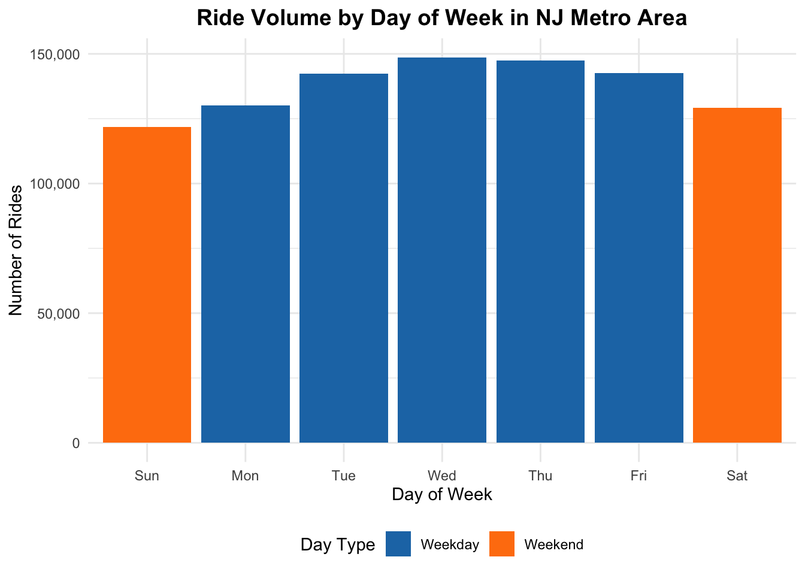
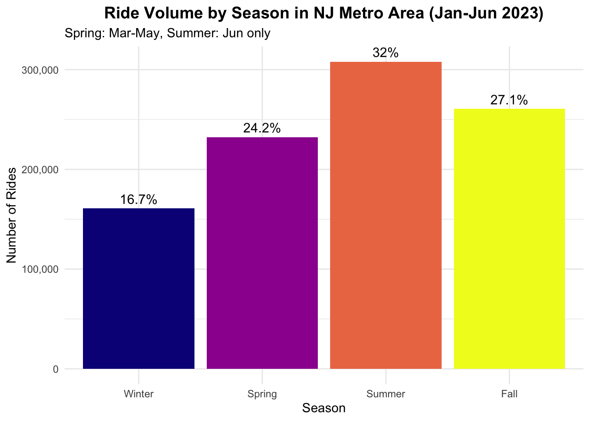
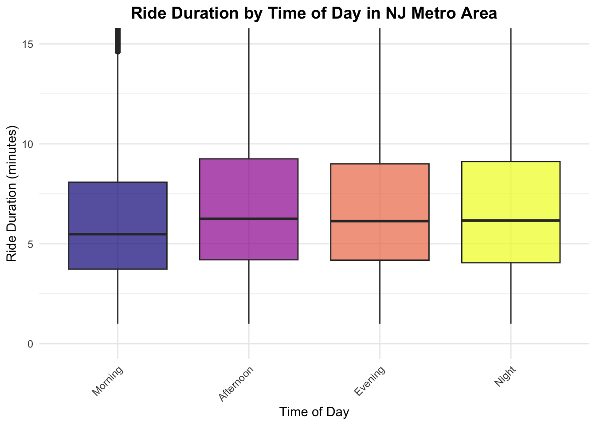
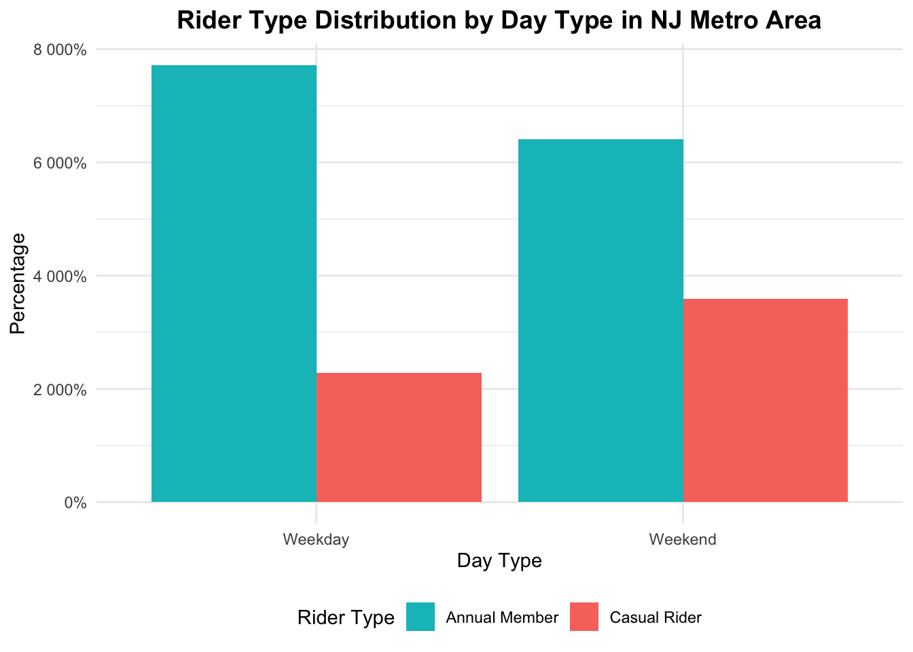
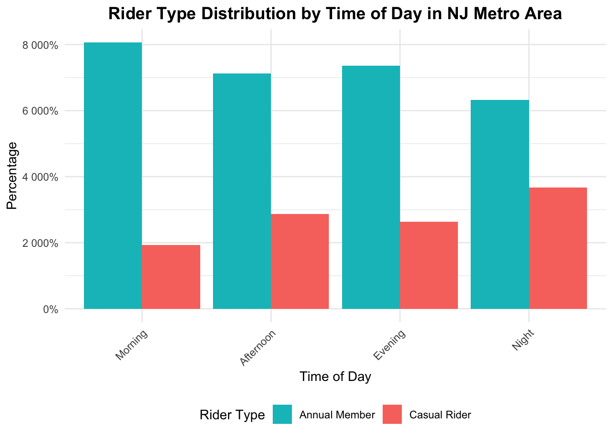

Exploratory Data Analysis
cat("\n\n=== ANALYSIS 1: MONTHLY AND SEASONAL PATTERNS IN NJ METRO AREA ===\n")##
##
## === ANALYSIS 1: MONTHLY AND SEASONAL PATTERNS IN NJ METRO AREA ===# Monthly summary
monthly_summary <- citibike_nj_analysis %>%
group_by(start_month) %>%
summarise(
n_rides = n(),
avg_duration = mean(ride_length_min),
total_hours = sum(ride_length_min) / 60,
.groups = "drop"
) %>%
mutate(
percentage = n_rides / sum(n_rides) * 100,
month_num = month(as.Date(paste("2023", start_month, "01"), format = "%Y %B %d"))
) %>%
arrange(month_num)
cat("\nMonthly Ride Summary for NJ Citi Bike:\n")##
## Monthly Ride Summary for NJ Citi Bike:kable(monthly_summary %>% select(start_month, n_rides, percentage, avg_duration), digits = 1)| start_month | n_rides | percentage | avg_duration |
|---|---|---|---|
| January | 54205 | 5.6 | 10.4 |
| February | 49315 | 5.1 | 9.2 |
| March | 60674 | 6.3 | 9.6 |
| April | 78280 | 8.1 | 11.6 |
| May | 93363 | 9.7 | 12.9 |
| June | 94671 | 9.8 | 12.6 |
| July | 104012 | 10.8 | 12.6 |
| August | 109316 | 11.4 | 11.6 |
| September | 91979 | 9.6 | 11.1 |
| October | 94921 | 9.9 | 10.9 |
| November | 73811 | 7.7 | 9.3 |
| December | 57249 | 6.0 | 8.8 |
# Plot: Total rides per month
p_monthly_total <- monthly_summary %>%
ggplot(aes(x = start_month, y = n_rides)) +
geom_bar(stat = "identity", fill = "steelblue", alpha = 0.8) +
geom_text(aes(label = paste0(round(percentage, 1), "%")),
vjust = -0.5, size = 3.5) +
labs(
title = "Monthly Ride Volume in NJ Metro Area (Jan-Jun 2023)",
subtitle = "Percentage of total rides shown above bars",
x = "Month",
y = "Number of Rides"
) +
theme_minimal() +
theme(
plot.title = element_text(face = "bold", size = 14, hjust = 0.5),
axis.text.x = element_text(angle = 45, hjust = 1)
) +
scale_y_continuous(labels = comma)
print(p_monthly_total)
# Monthly trends by member type
monthly_member <- citibike_nj_analysis %>%
group_by(start_month, member_type) %>%
summarise(
n_rides = n(),
avg_duration = mean(ride_length_min),
.groups = "drop"
) %>%
group_by(start_month) %>%
mutate(
total = sum(n_rides),
percentage = n_rides / total * 100
)
# Plot: Monthly trends by member type
p_monthly_member <- monthly_member %>%
ggplot(aes(x = start_month, y = n_rides, fill = member_type)) +
geom_bar(stat = "identity", position = "dodge") +
labs(
title = "Monthly Ridership by Member Type in NJ Metro Area",
x = "Month",
y = "Number of Rides",
fill = "Member Type"
) +
theme_minimal() +
theme(
plot.title = element_text(face = "bold", size = 14, hjust = 0.5),
axis.text.x = element_text(angle = 45, hjust = 1),
legend.position = "bottom"
) +
scale_fill_manual(values = c("Annual Member" = "#00BFC4", "Casual Rider" = "#F8766D")) +
scale_y_continuous(labels = comma)
print(p_monthly_member)
# Seasonal summary
seasonal_summary <- citibike_nj_analysis %>%
group_by(season) %>%
summarise(
n_rides = n(),
avg_duration = mean(ride_length_min),
total_hours = sum(ride_length_min) / 60,
.groups = "drop"
) %>%
mutate(percentage = n_rides / sum(n_rides) * 100)
cat("\nSeasonal Summary for NJ Citi Bike:\n")##
## Seasonal Summary for NJ Citi Bike:kable(seasonal_summary, digits = 1)| season | n_rides | avg_duration | total_hours | percentage |
|---|---|---|---|---|
| Winter | 160769 | 9.5 | 25376.7 | 16.7 |
| Spring | 232317 | 11.6 | 44844.9 | 24.2 |
| Summer | 307999 | 12.2 | 62824.5 | 32.0 |
| Fall | 260711 | 10.5 | 45751.2 | 27.1 |
# Plot: Total rides by season
p_seasonal_total <- seasonal_summary %>%
ggplot(aes(x = season, y = n_rides, fill = season)) +
geom_bar(stat = "identity") +
geom_text(aes(label = paste0(round(percentage, 1), "%")),
vjust = -0.5, size = 4) +
labs(
title = "Ride Volume by Season in NJ Metro Area (Jan-Jun 2023)",
subtitle = "Spring: Mar-May, Summer: Jun only",
x = "Season",
y = "Number of Rides"
) +
theme_minimal() +
theme(
plot.title = element_text(face = "bold", size = 14, hjust = 0.5),
legend.position = "none"
) +
scale_fill_viridis_d(option = "C") +
scale_y_continuous(labels = comma)
print(p_seasonal_total)
# ANALYSIS 2: TEMPORAL PATTERNS IN NJ METRO AREA
cat("\n\n=== ANALYSIS 2: TEMPORAL PATTERNS IN NJ METRO AREA ===\n")##
##
## === ANALYSIS 2: TEMPORAL PATTERNS IN NJ METRO AREA ===# Hourly patterns
hourly_summary <- citibike_nj_analysis %>%
group_by(start_hour, day_type) %>%
summarise(
n_rides = n(),
avg_duration = mean(ride_length_min),
.groups = "drop"
)
# Peak hours
peak_hours <- hourly_summary %>%
group_by(day_type) %>%
slice_max(n_rides, n = 3) %>%
arrange(day_type, desc(n_rides))
cat("\nPeak Hours by Day Type in NJ Metro Area:\n")##
## Peak Hours by Day Type in NJ Metro Area:kable(peak_hours, digits = 1)| start_hour | day_type | n_rides | avg_duration |
|---|---|---|---|
| 18 | Weekday | 77476 | 10.4 |
| 17 | Weekday | 75508 | 10.3 |
| 8 | Weekday | 56707 | 8.6 |
| 13 | Weekend | 19430 | 14.9 |
| 15 | Weekend | 19413 | 16.2 |
| 12 | Weekend | 19215 | 13.7 |
# Plot: Hourly patterns
p_hourly_patterns <- hourly_summary %>%
ggplot(aes(x = start_hour, y = n_rides, color = day_type)) +
geom_line(size = 1.2) +
geom_point(size = 1.5) +
labs(
title = "Hourly Ride Patterns by Day Type in NJ Metro Area",
subtitle = "Commute patterns visible on weekdays",
x = "Hour of Day",
y = "Number of Rides",
color = "Day Type"
) +
theme_minimal() +
theme(
plot.title = element_text(face = "bold", size = 14, hjust = 0.5),
legend.position = "bottom"
) +
scale_color_manual(values = c("Weekday" = "#1f77b4", "Weekend" = "#ff7f0e")) +
scale_x_continuous(breaks = seq(0, 23, by = 3)) +
scale_y_continuous(labels = comma)
print(p_hourly_patterns)
# Day of week analysis
dow_summary <- citibike_nj_analysis %>%
group_by(day_of_week, day_type) %>%
summarise(
n_rides = n(),
avg_duration = mean(ride_length_min),
.groups = "drop"
) %>%
mutate(percentage = n_rides / sum(n_rides) * 100)
cat("\nDay of Week Summary for NJ Citi Bike:\n")##
## Day of Week Summary for NJ Citi Bike:kable(dow_summary, digits = 1)| day_of_week | day_type | n_rides | avg_duration | percentage |
|---|---|---|---|---|
| Sun | Weekend | 121742 | 14.7 | 12.7 |
| Mon | Weekday | 130039 | 10.5 | 13.5 |
| Tue | Weekday | 142311 | 10.1 | 14.8 |
| Wed | Weekday | 148602 | 9.8 | 15.5 |
| Thu | Weekday | 147393 | 9.9 | 15.3 |
| Fri | Weekday | 142610 | 10.5 | 14.8 |
| Sat | Weekend | 129099 | 13.4 | 13.4 |
# Plot: Day of week patterns
p_dow_patterns <- dow_summary %>%
ggplot(aes(x = day_of_week, y = n_rides, fill = day_type)) +
geom_bar(stat = "identity") +
labs(
title = "Ride Volume by Day of Week in NJ Metro Area",
x = "Day of Week",
y = "Number of Rides",
fill = "Day Type"
) +
theme_minimal() +
theme(
plot.title = element_text(face = "bold", size = 14, hjust = 0.5),
legend.position = "bottom"
) +
scale_fill_manual(values = c("Weekday" = "#1f77b4", "Weekend" = "#ff7f0e")) +
scale_y_continuous(labels = comma)
print(p_dow_patterns)
# Heatmap: Hour × Day of week
hour_dow_summary <- citibike_nj_analysis %>%
count(day_of_week, start_hour) %>%
group_by(day_of_week) %>%
mutate(percentage = n / max(n) * 100)
p_heatmap <- hour_dow_summary %>%
ggplot(aes(x = start_hour, y = day_of_week, fill = percentage)) +
geom_tile() +
labs(
title = "Heatmap: Ride Frequency by Hour and Day of Week in NJ Metro Area",
x = "Hour of Day",
y = "Day of Week",
fill = "Relative\nFrequency (%)"
) +
theme_minimal() +
theme(
plot.title = element_text(face = "bold", size = 14, hjust = 0.5)
) +
scale_fill_gradient(low = "white", high = "steelblue") +
scale_x_continuous(breaks = seq(0, 23, by = 3))
print(p_heatmap)
# ANALYSIS 3: RIDE DURATION ANALYSIS IN NJ METRO AREA
cat("\n\n=== ANALYSIS 3: RIDE DURATION ANALYSIS IN NJ METRO AREA ===\n")##
##
## === ANALYSIS 3: RIDE DURATION ANALYSIS IN NJ METRO AREA ===# Handle outliers using IQR method
calculate_outlier_bounds <- function(data, column) {
q1 <- quantile(data[[column]], 0.25, na.rm = TRUE)
q3 <- quantile(data[[column]], 0.75, na.rm = TRUE)
iqr <- q3 - q1
lower_bound <- q1 - 1.5 * iqr
upper_bound <- q3 + 1.5 * iqr
return(list(lower = lower_bound, upper = upper_bound))
}
outlier_bounds <- calculate_outlier_bounds(citibike_nj_analysis, "ride_length_min")
cat(sprintf("\nOutlier bounds (IQR method): Lower = %.1f min, Upper = %.1f min\n",
outlier_bounds$lower, outlier_bounds$upper))##
## Outlier bounds (IQR method): Lower = -5.0 min, Upper = 19.5 min# Create dataset without extreme outliers
duration_analysis <- citibike_nj_analysis %>%
filter(ride_length_min <= outlier_bounds$upper)
# Duration statistics
duration_stats <- duration_analysis %>%
summarise(
n_rides = n(),
mean_duration = mean(ride_length_min),
median_duration = median(ride_length_min),
sd_duration = sd(ride_length_min),
q25 = quantile(ride_length_min, 0.25),
q75 = quantile(ride_length_min, 0.75)
)
cat("\nRide Duration Statistics for NJ Citi Bike (excluding outliers):\n")##
## Ride Duration Statistics for NJ Citi Bike (excluding outliers):kable(duration_stats, digits = 1)| n_rides | mean_duration | median_duration | sd_duration | q25 | q75 |
|---|---|---|---|---|---|
| 872183 | 6.9 | 6 | 3.9 | 4 | 8.8 |
# Plot: Duration distribution
p_duration_dist <- duration_analysis %>%
ggplot(aes(x = ride_length_min)) +
geom_histogram(bins = 50, fill = "steelblue", alpha = 0.7) +
geom_vline(aes(xintercept = mean(ride_length_min)),
color = "red", linetype = "dashed", size = 1) +
labs(
title = "Distribution of Ride Durations in NJ Metro Area",
subtitle = "Red line shows mean duration",
x = "Ride Duration (minutes)",
y = "Frequency"
) +
theme_minimal() +
theme(plot.title = element_text(face = "bold", size = 14, hjust = 0.5)) +
xlim(0, min(120, outlier_bounds$upper))
print(p_duration_dist)## Warning: Removed 2 rows containing missing values or values outside the
## scale range (`geom_bar()`).
# Duration by member type
duration_member <- duration_analysis %>%
group_by(member_type) %>%
summarise(
n_rides = n(),
mean_duration = mean(ride_length_min),
median_duration = median(ride_length_min),
sd_duration = sd(ride_length_min),
.groups = "drop"
)
cat("\nRide Duration by Member Type in NJ Metro Area:\n")##
## Ride Duration by Member Type in NJ Metro Area:kable(duration_member, digits = 1)| member_type | n_rides | mean_duration | median_duration | sd_duration |
|---|---|---|---|---|
| Annual Member | 666521 | 6.5 | 5.6 | 3.7 |
| Casual Rider | 205662 | 8.3 | 7.4 | 4.0 |
# Plot: Duration by member type
p_duration_member <- duration_analysis %>%
ggplot(aes(x = ride_length_min, fill = member_type)) +
geom_density(alpha = 0.6) +
labs(
title = "Ride Duration Distribution by Member Type in NJ Metro Area",
x = "Ride Duration (minutes)",
y = "Density",
fill = "Member Type"
) +
theme_minimal() +
theme(
plot.title = element_text(face = "bold", size = 14, hjust = 0.5),
legend.position = "bottom"
) +
scale_fill_manual(values = c("Annual Member" = "#00BFC4", "Casual Rider" = "#F8766D")) +
xlim(0, min(120, outlier_bounds$upper))
print(p_duration_member)
# Duration by time of day
duration_time <- duration_analysis %>%
group_by(time_of_day) %>%
summarise(
mean_duration = mean(ride_length_min),
n_rides = n(),
.groups = "drop"
)
cat("\nAverage Ride Duration by Time of Day in NJ Metro Area:\n")##
## Average Ride Duration by Time of Day in NJ Metro Area:kable(duration_time, digits = 1)| time_of_day | mean_duration | n_rides |
|---|---|---|
| Morning | 6.4 | 252192 |
| Afternoon | 7.2 | 246779 |
| Evening | 7.0 | 278330 |
| Night | 7.1 | 94882 |
# Plot: Duration by time of day
p_duration_time <- duration_analysis %>%
ggplot(aes(x = time_of_day, y = ride_length_min, fill = time_of_day)) +
geom_boxplot(alpha = 0.7) +
labs(
title = "Ride Duration by Time of Day in NJ Metro Area",
x = "Time of Day",
y = "Ride Duration (minutes)"
) +
theme_minimal() +
theme(
plot.title = element_text(face = "bold", size = 14, hjust = 0.5),
axis.text.x = element_text(angle = 45, hjust = 1),
legend.position = "none"
) +
scale_fill_viridis_d(option = "C") +
coord_cartesian(ylim = c(0, quantile(duration_analysis$ride_length_min, 0.95)))
print(p_duration_time)
# ANALYSIS 4: USER TYPE COMPARISONS IN NJ METRO AREA
cat("\n\n=== ANALYSIS 4: USER TYPE COMPARISONS IN NJ METRO AREA ===\n")##
##
## === ANALYSIS 4: USER TYPE COMPARISONS IN NJ METRO AREA ===# Overall distribution
member_dist <- citibike_nj_analysis %>%
count(member_type) %>%
mutate(percentage = n / sum(n) * 100)
cat("\nOverall Member Distribution in NJ Metro Area:\n")##
## Overall Member Distribution in NJ Metro Area:kable(member_dist, digits = 1)| member_type | n | percentage |
|---|---|---|
| Annual Member | 709452 | 73.8 |
| Casual Rider | 252344 | 26.2 |
# Plot: Member distribution pie chart
p_member_pie <- member_dist %>%
ggplot(aes(x = "", y = n, fill = member_type)) +
geom_bar(stat = "identity", width = 1) +
coord_polar("y", start = 0) +
labs(
title = "Overall Rider Type Distribution in NJ Metro Area",
fill = "Rider Type"
) +
theme_void() +
theme(
plot.title = element_text(face = "bold", size = 14, hjust = 0.5),
legend.position = "bottom"
) +
scale_fill_manual(values = c("Annual Member" = "#00BFC4", "Casual Rider" = "#F8766D")) +
geom_text(aes(label = paste0(round(percentage, 1), "%")),
position = position_stack(vjust = 0.5))
print(p_member_pie)
# Member patterns by day type
member_daytype <- citibike_nj_analysis %>%
group_by(day_type, member_type) %>%
summarise(
n_rides = n(),
avg_duration = mean(ride_length_min),
.groups = "drop"
) %>%
group_by(day_type) %>%
mutate(
total = sum(n_rides),
percentage = n_rides / total * 100
)
cat("\nMember Distribution by Day Type in NJ Metro Area:\n")##
## Member Distribution by Day Type in NJ Metro Area:kable(member_daytype, digits = 1)| day_type | member_type | n_rides | avg_duration | total | percentage |
|---|---|---|---|---|---|
| Weekday | Annual Member | 548686 | 8.5 | 710955 | 77.2 |
| Weekday | Casual Rider | 162269 | 15.8 | 710955 | 22.8 |
| Weekend | Annual Member | 160766 | 10.2 | 250841 | 64.1 |
| Weekend | Casual Rider | 90075 | 20.7 | 250841 | 35.9 |
# Plot: Member patterns by day type
p_member_daytype <- member_daytype %>%
ggplot(aes(x = day_type, y = percentage, fill = member_type)) +
geom_bar(stat = "identity", position = "dodge") +
labs(
title = "Rider Type Distribution by Day Type in NJ Metro Area",
x = "Day Type",
y = "Percentage",
fill = "Rider Type"
) +
theme_minimal() +
theme(
plot.title = element_text(face = "bold", size = 14, hjust = 0.5),
legend.position = "bottom"
) +
scale_fill_manual(values = c("Annual Member" = "#00BFC4", "Casual Rider" = "#F8766D")) +
scale_y_continuous(labels = percent_format())
print(p_member_daytype)
# Member patterns by time of day
member_time <- citibike_nj_analysis %>%
group_by(time_of_day, member_type) %>%
summarise(
n_rides = n(),
.groups = "drop"
) %>%
group_by(time_of_day) %>%
mutate(
total = sum(n_rides),
percentage = n_rides / total * 100
)
# Plot: Member patterns by time of day
p_member_time <- member_time %>%
ggplot(aes(x = time_of_day, y = percentage, fill = member_type)) +
geom_bar(stat = "identity", position = "dodge") +
labs(
title = "Rider Type Distribution by Time of Day in NJ Metro Area",
x = "Time of Day",
y = "Percentage",
fill = "Rider Type"
) +
theme_minimal() +
theme(
plot.title = element_text(face = "bold", size = 14, hjust = 0.5),
axis.text.x = element_text(angle = 45, hjust = 1),
legend.position = "bottom"
) +
scale_fill_manual(values = c("Annual Member" = "#00BFC4", "Casual Rider" = "#F8766D")) +
scale_y_continuous(labels = percent_format())
print(p_member_time)
# Bike type preferences
bike_member <- citibike_nj_analysis %>%
group_by(member_type, bike_type) %>%
summarise(
n_rides = n(),
.groups = "drop"
) %>%
group_by(member_type) %>%
mutate(
total = sum(n_rides),
percentage = n_rides / total * 100
)
cat("\nBike Type Preference by Member Type in NJ Metro Area:\n")##
## Bike Type Preference by Member Type in NJ Metro Area:kable(bike_member, digits = 1)| member_type | bike_type | n_rides | total | percentage |
|---|---|---|---|---|
| Annual Member | Classic | 627042 | 709452 | 88.4 |
| Annual Member | Electric | 82410 | 709452 | 11.6 |
| Casual Rider | Classic | 205515 | 252344 | 81.4 |
| Casual Rider | Electric | 44741 | 252344 | 17.7 |
| Casual Rider | Docked | 2088 | 252344 | 0.8 |
# Plot: Bike type preferences
p_bike_member <- bike_member %>%
ggplot(aes(x = member_type, y = percentage, fill = bike_type)) +
geom_bar(stat = "identity", position = "stack") +
labs(
title = "Bike Type Preference by Rider Type in NJ Metro Area",
x = "Rider Type",
y = "Percentage",
fill = "Bike Type"
) +
theme_minimal() +
theme(
plot.title = element_text(face = "bold", size = 14, hjust = 0.5),
legend.position = "bottom"
) +
scale_fill_viridis_d(option = "D") +
scale_y_continuous(labels = percent_format())
print(p_bike_member)